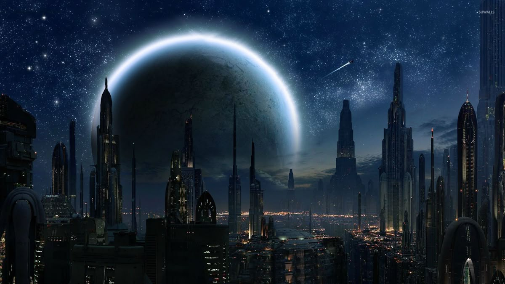
A República Galáctica foi um governo democrático que uniu a galáxia e foi protegida pela Ordem Jedi. Com o tempo, ficou enfraquecida por corrupção e conflitos internos.O Sith Palpatine manipulou a situação, provocando as Guerras Clônicas para ganhar poder. No final, ele ordenou a destruição dos Jedi e transformou a República no Império Galáctico.
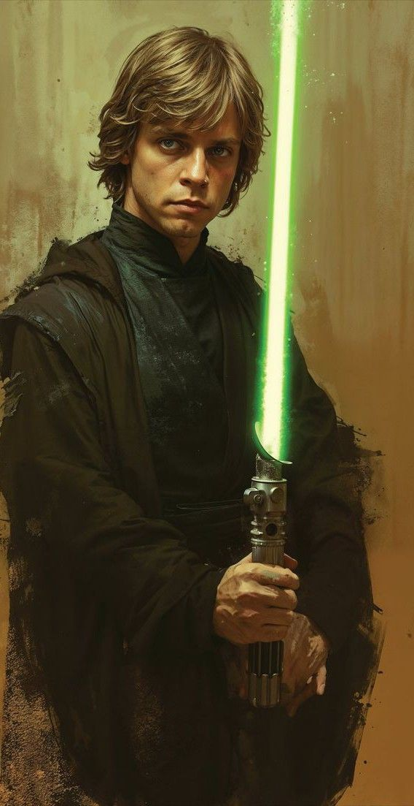
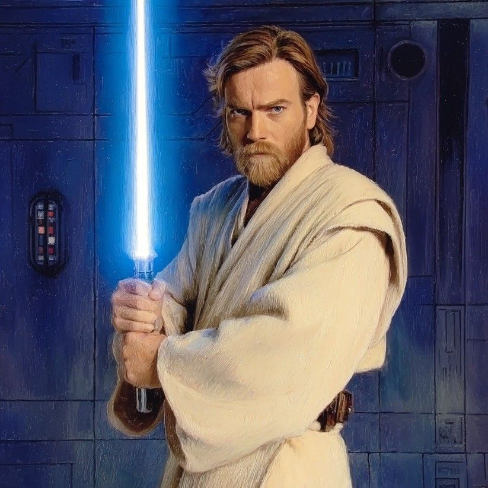
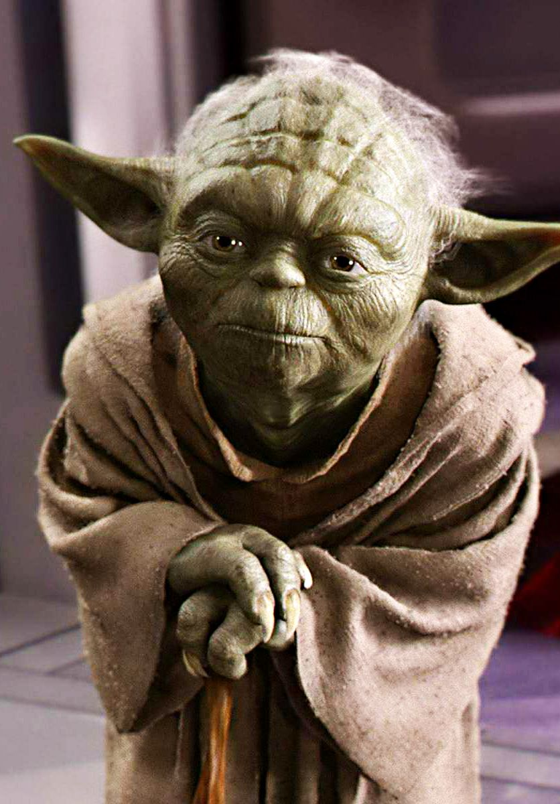
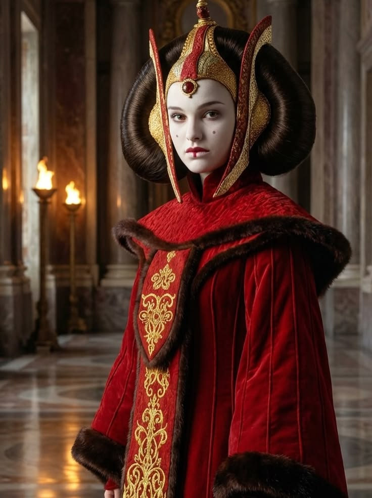
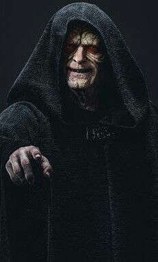
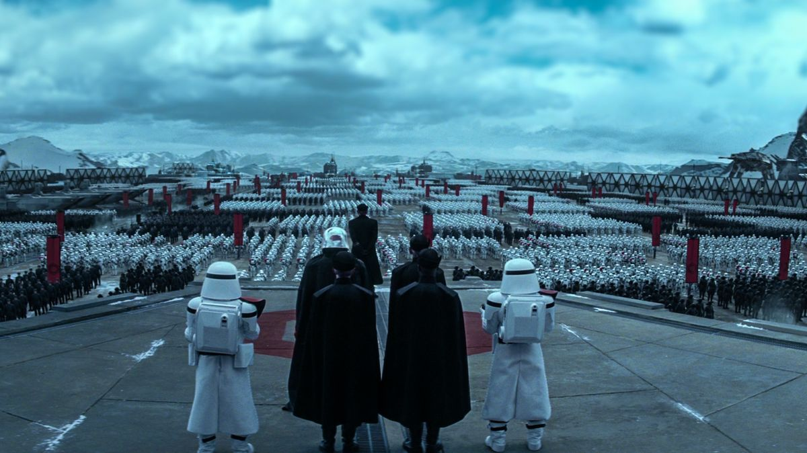
O Império Galáctico em Star Wars surge após a queda da República Galáctica, quando Palpatine se declara Imperador. Ele estabelece um regime autoritário, eliminando a democracia e governando com medo e controle militar. Os Jedi são praticamente exterminados, e o Império passa a dominar a galáxia com armas poderosas, como a Estrela da Morte. Enquanto isso, surge a Aliança Rebelde, um grupo que luta para restaurar a liberdade. Esse conflito entre Império e Rebelião leva, eventualmente, à queda do próprio Império.
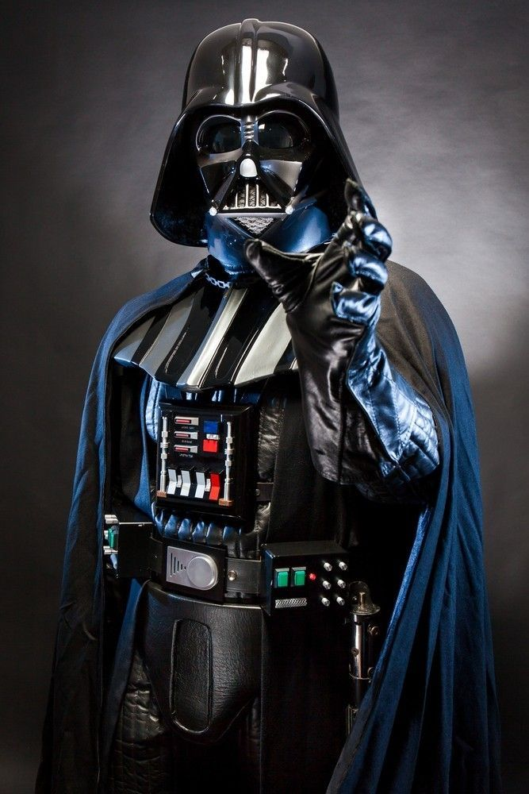
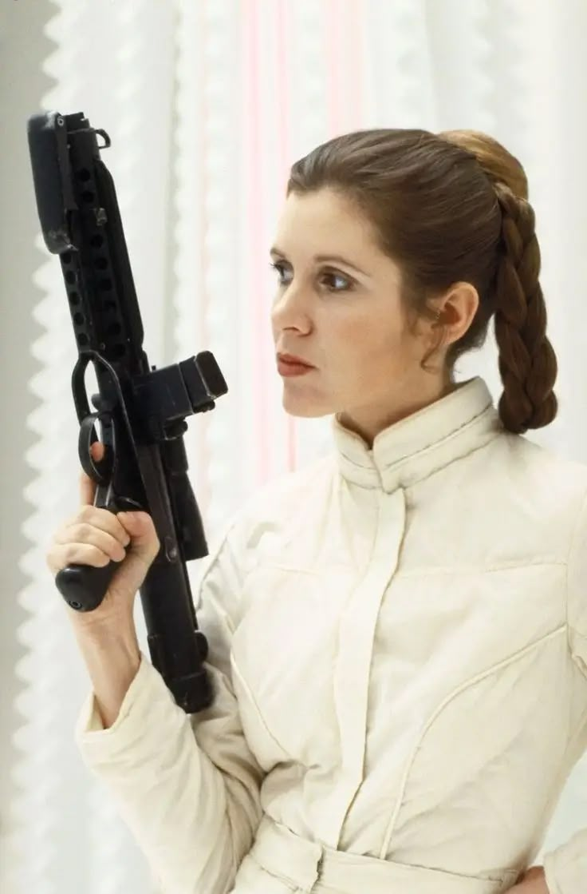
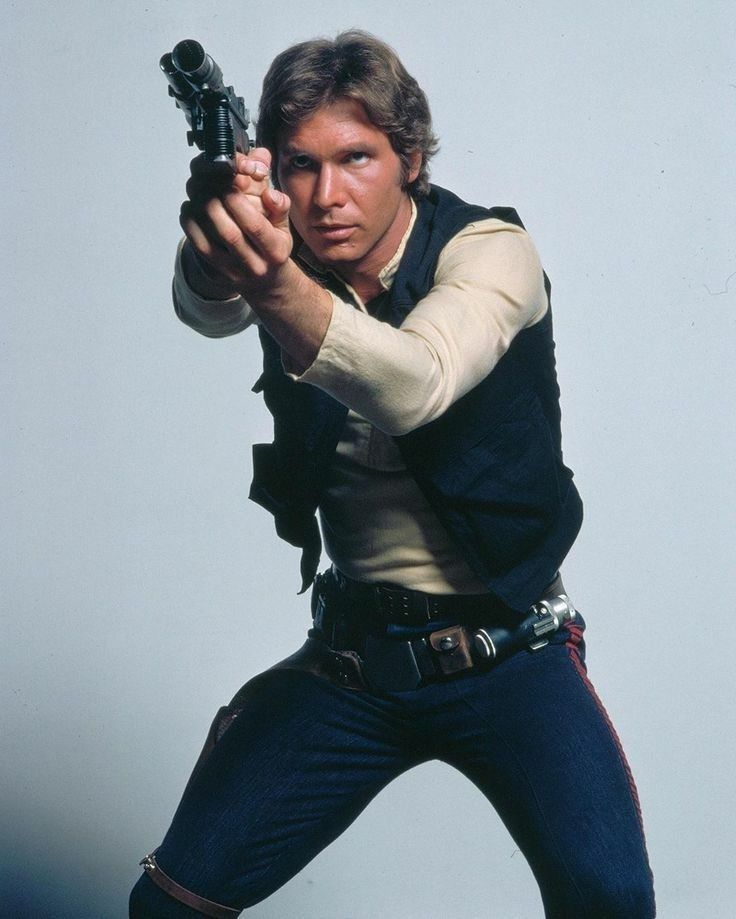
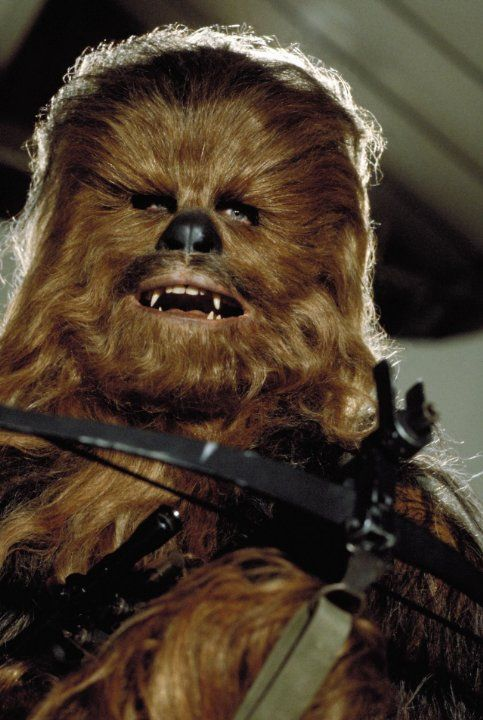
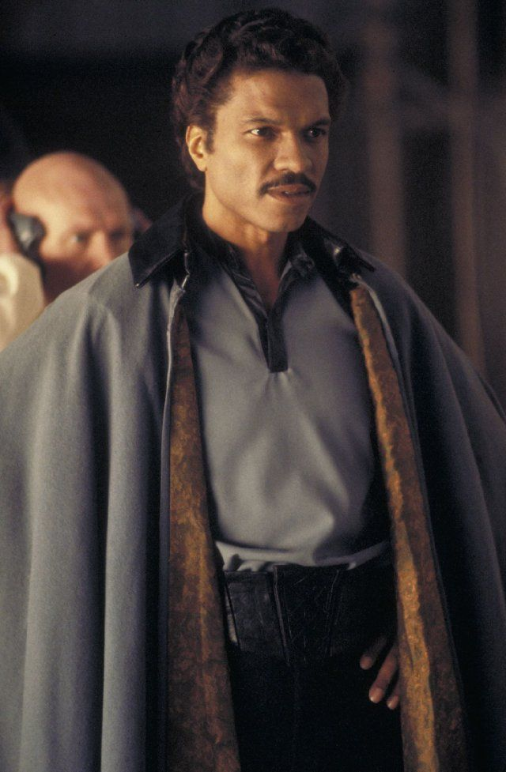
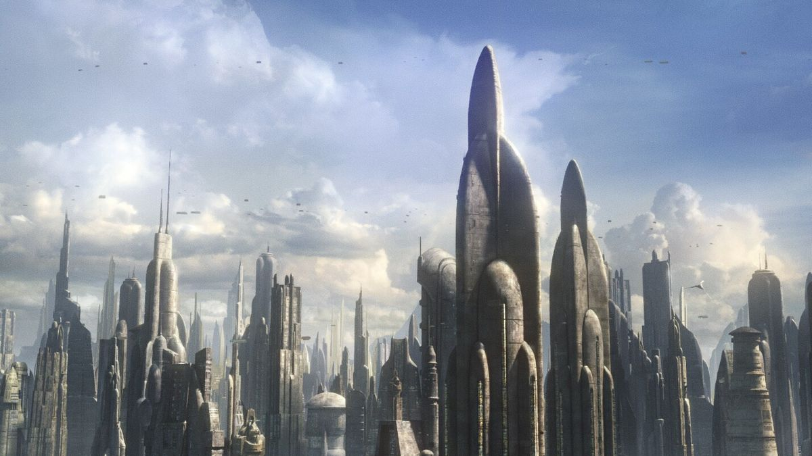
A Nova República em Star Wars surge após a queda do Império, com o objetivo de restaurar a democracia e trazer paz à galáxia. Inspirada nos ideais da antiga República Galáctica, ela tenta evitar os erros do passado, reduzindo o poder militar e descentralizando o governo.
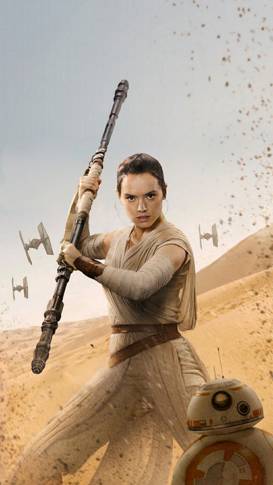
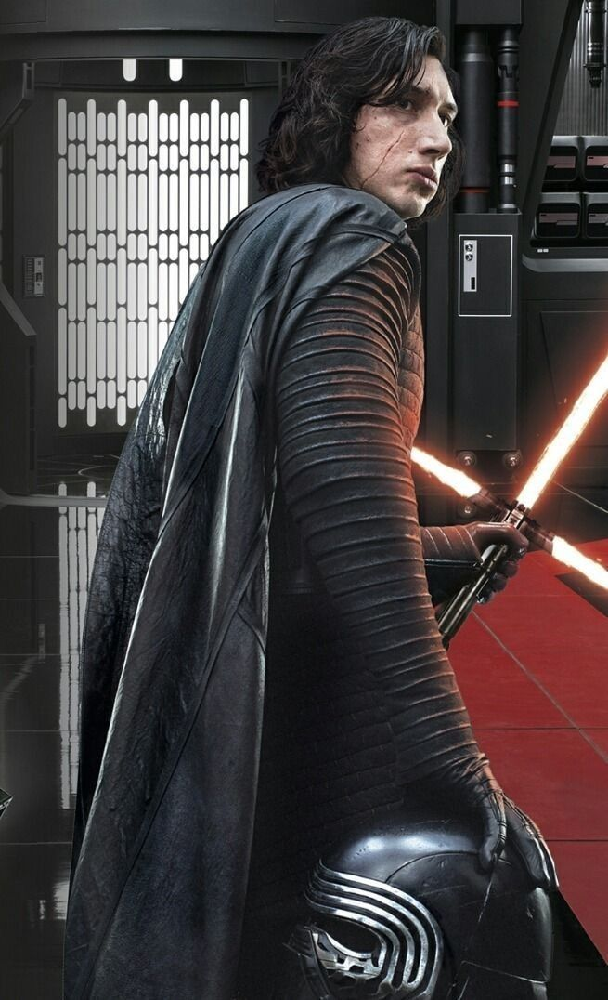
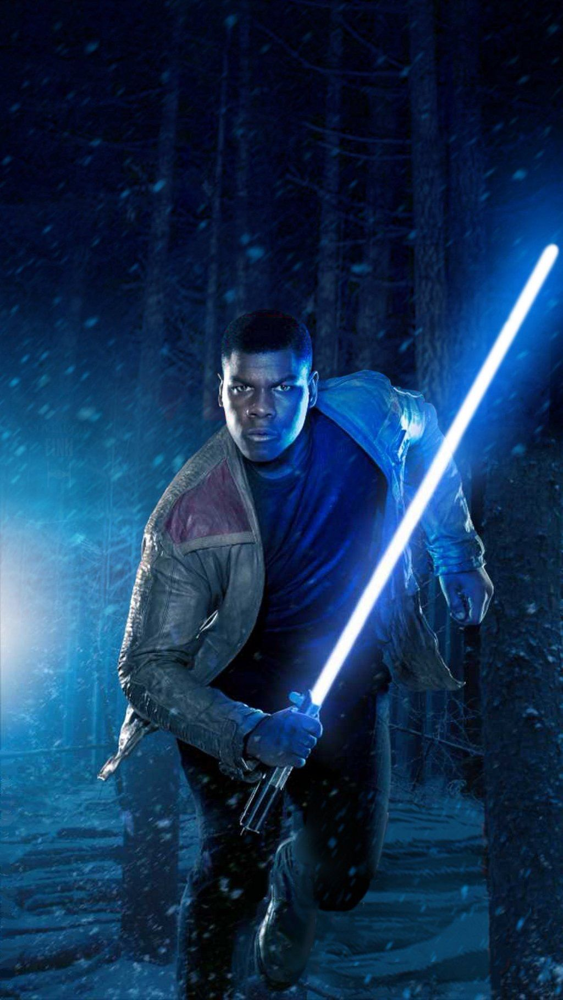
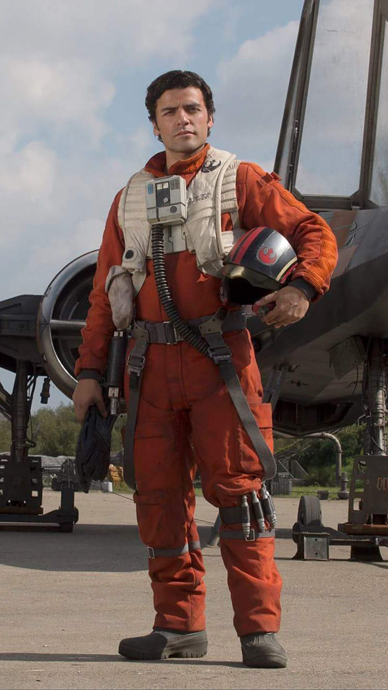
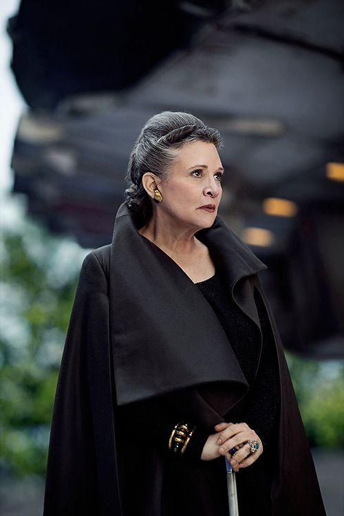
Uma saga de ficção científica que se passa em uma galáxia distante.
Três principais: República, Império e Nova República.
Varia por era, mas Luke Skywalker é um dos mais centrais.